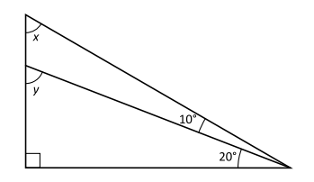

Mattedelen
Består av 12 uppgifter. Du har fyra svarsalternativ till varje uppgift.
Matteövningar
1.
\( x - 7 = 3(x + 1) \)
Vilket värde har \( x \)?
2.
Vad är \( x + y \)?
3.
Vad är medelvärdet av \( 8^2 \) och \( 4^2 \)?
4.
\( f(x) = 3x - 1 \)
\( g(x) = -2f(x) + 4 \)
Vilket svarsalternativ är lika med \( g(1) \)?
5.
\( \frac{\frac{2}{5} - \frac{1}{4}}{\frac{1}{3} + \frac{1}{6}} \)
Vilket svarsalternativ är lika med detta uttryck?
6.
Vilket svarsalternativ är lika med ett heltal?
7.
\( f(x) = a \cdot 3^{x} \)
Om \( a \) väljs så att \( f(1) = 3 \), vilket värde har då \( f(0) \) ?
8.
\( x y z \neq 0 \)
Vilket svarsalternativ motsvarar \( \frac{x^{4} y^{2} z^{3}}{\left(x^{2} y z^{2}\right)^{2}} \) ?
9.
\( 60 \% \) av \( x \) är lika med \( 40 \% \) av \( y \). Hur många procent av \( \boldsymbol{x} \) är \( \boldsymbol{y} \) ?
10.
Arean av en kvadrat är \( 100 \, \mathrm{cm}^2 \). Vilket svarsalternativ är närmast längden av kvadratens diagonal?
11.
\( z = x + y = 5 \)
Vad är \( \sqrt{x z + y z} \) ?
12.
Summan av de 30 första udda positiva heltalen är \( u \). Summan av de 30 första jämna positiva heltalen är \( \boldsymbol{j} \). Vad är \( \boldsymbol{u} - \boldsymbol{j} \) ?